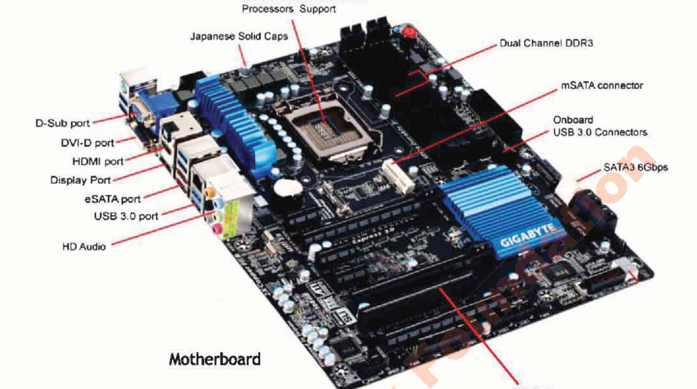
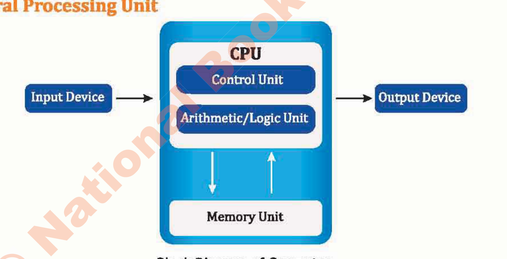
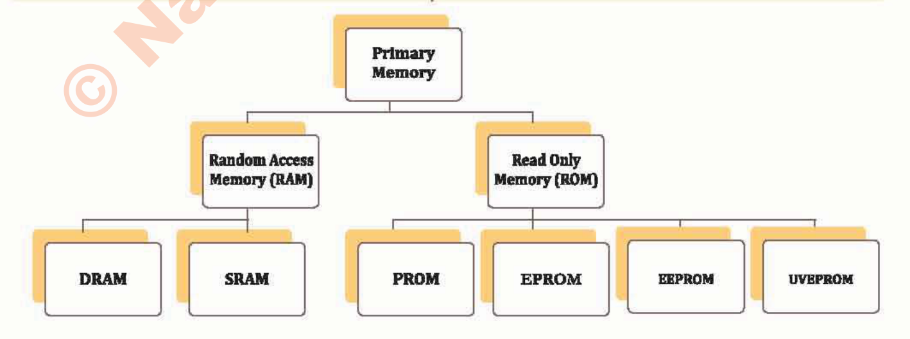
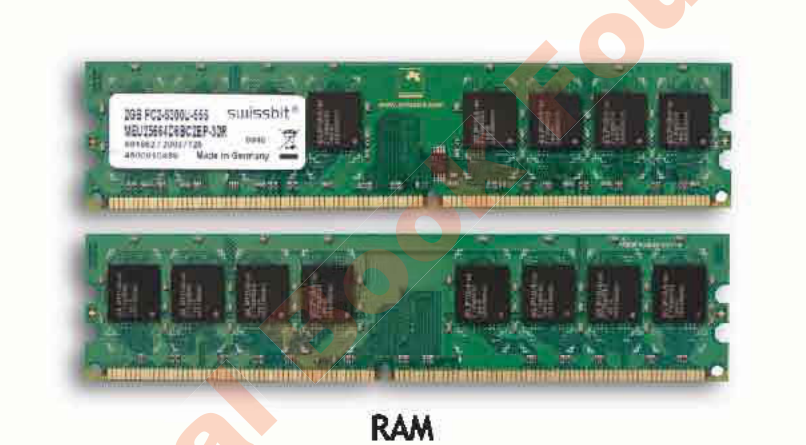
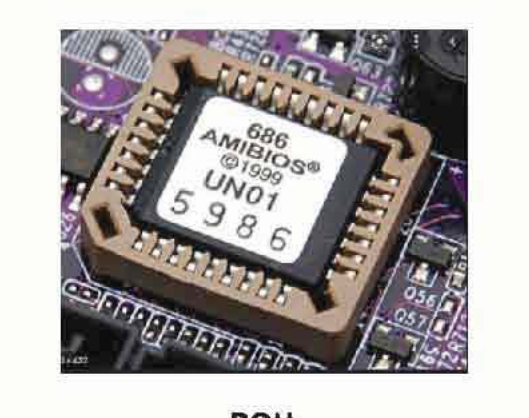

Whenever you tap your smartphone screen, search for a video, or send a quick message to a friend across the globe, you are putting Information and Communication Technology (ICT) to work. Rather than memorizing dry academic definitions, I want you to see ICT as a living ecosystem: the devices, networks, and logical tools we use to solve real human problems and turn messy data into valuable knowledge.
1. What is ICT? (Breaking it down)
I find it easiest to understand ICT by looking at its three core pillars:
- Information: Meaningful knowledge and structured facts that you can actually use to make a smart decision.
- Communication: The highways and pathways—like Wi-Fi, fiber cables, and satellites—that carry our digital voices, photos, and files anywhere in milliseconds.
- Technology: The tangible hardware (microchips, displays, laptops) and clever software programs that do the actual thinking, calculating, and heavy lifting.
2. Data vs. Information: The Golden Rule
Beginners often use the words data and information interchangeably, but in computer science, they are two completely different stages of a process:
- Data: Unprocessed, raw ingredients with no built-in explanation. If someone walks up to you and says
"98, 86, 92"or"Ahmed, pass", you have no idea what that means yet. That is raw data. - Information: Data that has been cleaned, calculated, and arranged with context so it tells a clear story. For instance: "Ahmed earned an overall average of 92%, achieving top ranking in his Grade 7 Mathematics exam."
My Favorite Kitchen Analogy: Think of raw eggs, flour, and cocoa powder sitting on a counter as data. Mixing the batter and baking it in an oven is processing. The warm, iced birthday cake you serve to your friends is information!
3. Hardware Architecture & System Components
Computer hardware comprises all tangible, physical parts of a computing system. Inside the system unit, components interact through high-speed electronic buses:

- Central Processing Unit (CPU): Known as the "brain" of the computer. The CPU contains two core subunits:
- Arithmetic Logic Unit (ALU): Performs mathematical arithmetic (+, -, *, /) and logical comparisons (<, >, =, AND, OR).
- Control Unit (CU): Directs the flow of instructions and data like a traffic controller, coordinating operations between ALU, memory, and peripherals.

4. Memory vs. Storage
Computers utilize a memory hierarchy to balance speed, cost, and volatility:



5. The Family Tree of Computers
Not every computer looks like a desktop tower. Depending on what job needs doing, computing power spans four major tiers:
- Supercomputers: Giant rooms of linked processors tackling massive global questions—simulating tomorrow's weather patterns, predicting earthquakes, or modeling complex protein molecules.
- Mainframes: The dependable workhorses behind the scenes. If you swipe a bank debit card or book an airline ticket, a mainframe is processing that transaction securely among millions of others in that exact second.
- Minicomputers (Midrange): Multi-user computers commonly deployed across university campuses and factories to coordinate local operations.
- Microcomputers (Personal Computers): The machines we know and love: laptops, desktop workstations, tablets, and the smartphone sitting in your pocket right now.
6. System Software vs. Application Software
Without software, your computer is just an expensive collection of silicon, metal, and glass. Software gives it life:
- System Software: The unseen manager working in the background. The most critical piece is your Operating System (OS) (such as Windows, Android, macOS, or Linux). It talks directly to your hardware, handles memory, and keeps things running smoothly.
- Application Software: The specific tools and apps you actually interact with to get work done or have fun (like typing in Microsoft Word, browsing with Google Chrome, editing pictures in Photoshop, or playing your favorite game).
Unit 01 · Interactive Assessment
ICT Fundamentals Quiz — Check Your Knowledge
Test your understanding with instant feedback and explanations.
01 What is the primary distinction between data and information?
02 Which internal subunit of the CPU carries out mathematical arithmetic and logical comparisons?
03 Why is Random Access Memory (RAM) categorized as volatile storage?
04 Which classification of computers is utilized for weather forecasting, climate modeling, and space simulations?
05 What software category does the Operating System (e.g. Windows, Android) belong to?
Interactive Student Lab Workbook · Unit 01
Unit 1 Reflection & Lab Notes
Answer these review questions. Your responses are automatically saved in your browser.